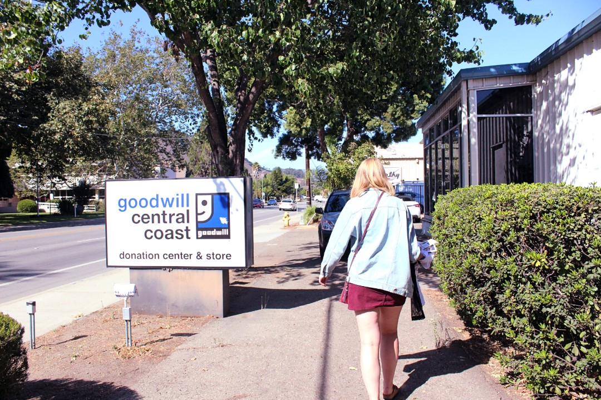
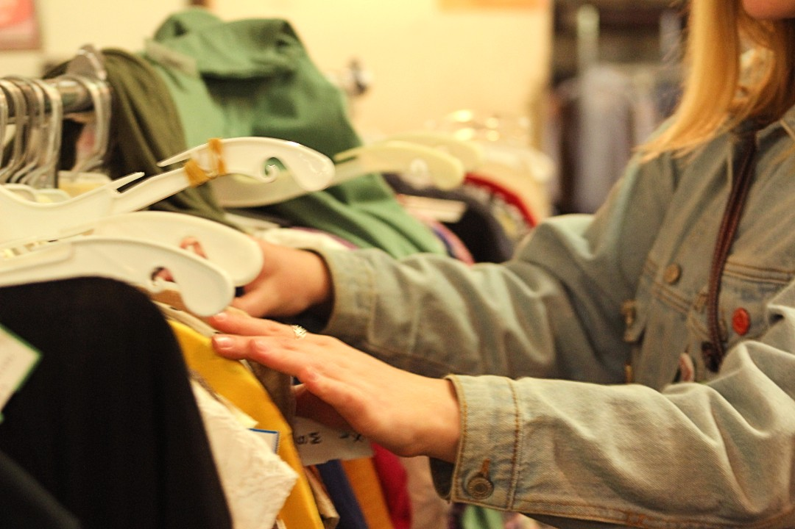
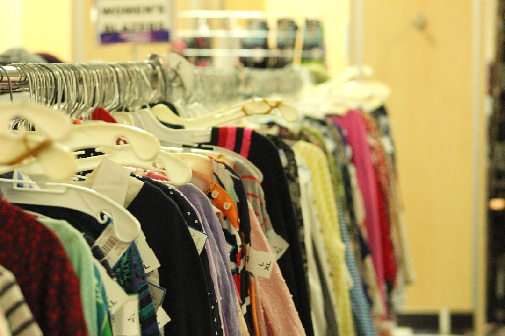
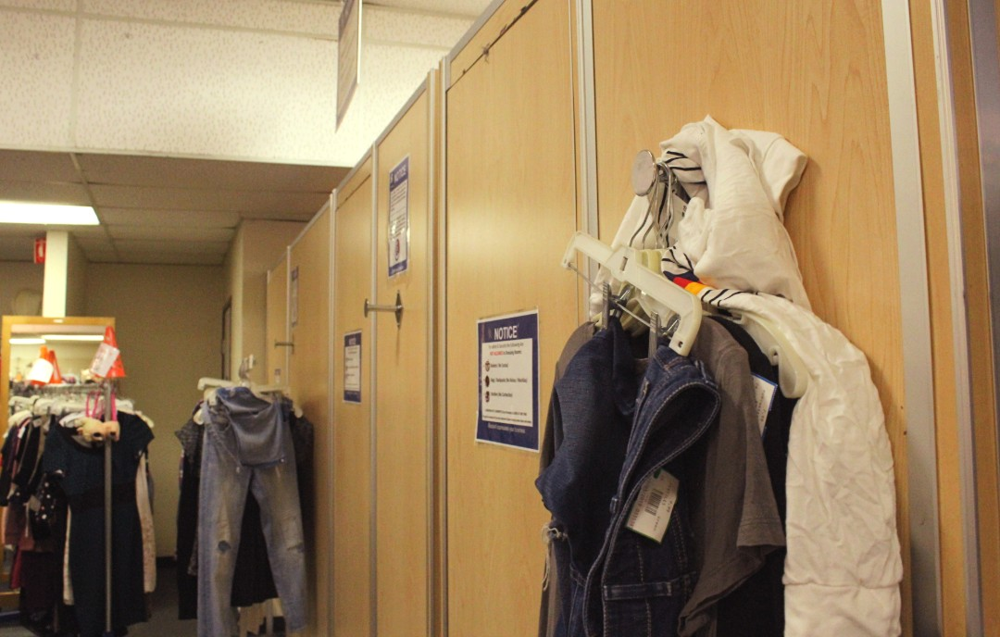
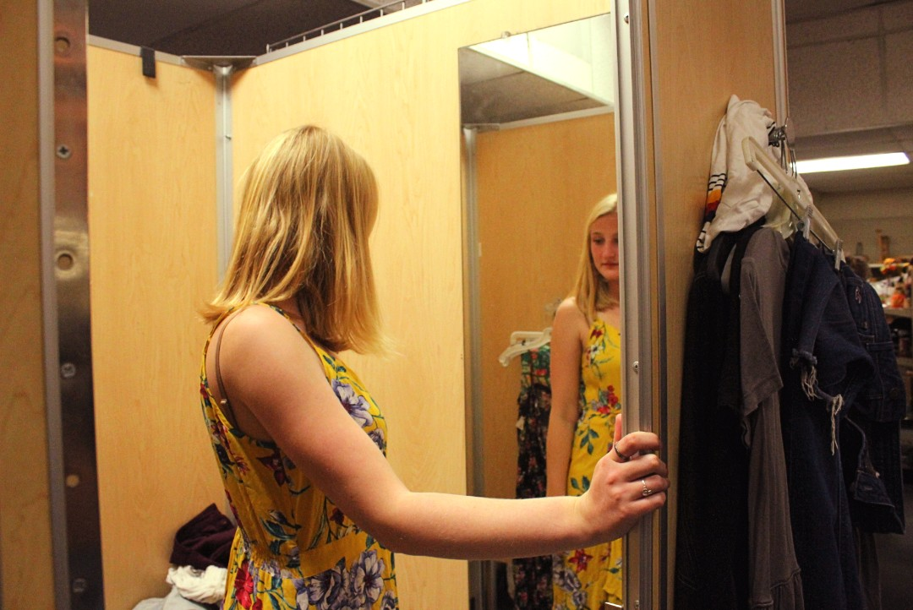
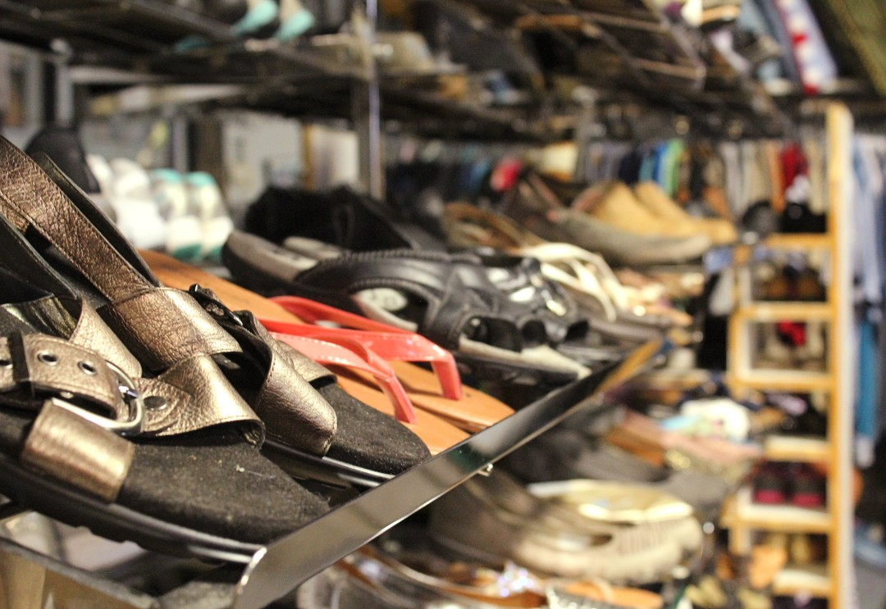
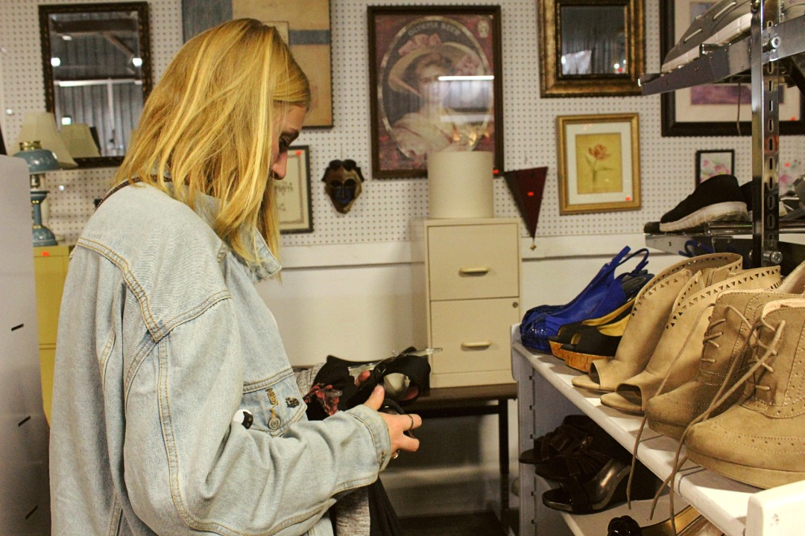
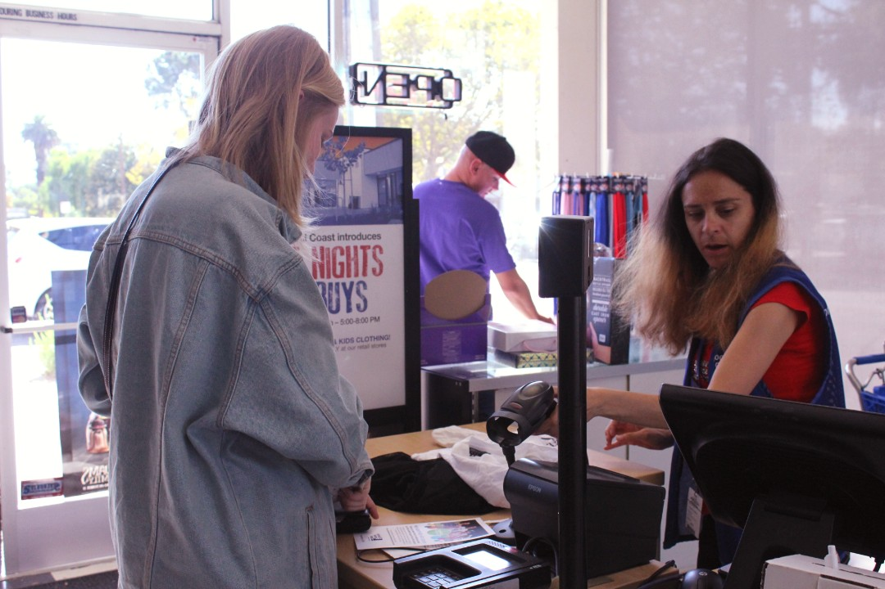
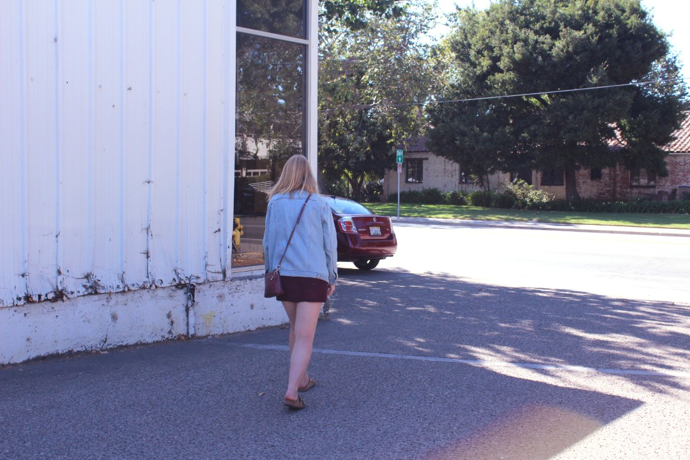

A Day of Thrifting
Thrifting in San Luis Obispo
1 / 10

Saturday, October 12th, 2019, 2:00pm. Mia von Knorring, a fourth-year biomedical engineering major, spends a weekend afternoon searching for hidden gems at Goodwill Central Coast in San Luis Obispo.
2 / 10

Saturday, October 12th, 2019, 2:07pm. “I always like to start at the shirts and work my way around,” said Mia, “One of my secrets is to always look in the men’s section, it always has cool t-shirts and jackets.” Getting creative and seeing potential in pieces are important when thrifting clothes.
3 / 10

Saturday, October 12th, 2019.The central coast’s chapter of Goodwill began in Santa Cruz and spread to three different counties. The local Goodwill of San Luis Obispo is a staple in the community; it may be on the smaller side but it is always bustling with customers.
4 / 10

Saturday, October 12th, 2019, 2:26pm. “I like to shop at Goodwill, Mission Thrift, and a few places in Morro Bay. It’s always fun to take part of the day to find some cool clothes or even other interesting things,”said Mia. Morro Bay boasts over 10 thrift stores and San Luis Obispo is home to around 12.
5 / 10

Saturday, October 12th, 2019.Mia’s extra items hang outside the dressing room. Goodwill has a sign on the door requesting no more than five items at a time in the dressing rooms. This sign is in English and Spanish.
6 / 10

Saturday, October 12th, 2019.Mia twists and turns in a bright yellow floral dress. “If I can’t see myself wearing something five times or more, I’ll put it back,” Mia said about her habit of impulse buying. Most items of clothing at Goodwill are under $15.
7 / 10

Saturday, October 12th, 2019. “Thrifting is one of the things that directly makes me feel like I’m lowering my impact on the environment. It bothers me that top brands for my demographic like H and Forever 21 don’t pay their workers a livable wage. So I consider it to be a hobby of mine that is low cost to me and the environment,” said Lucy Swift (not pictured), a fifth-year kinesiology major.
8 / 10

Saturday, October 12th, 2019, 2:46pm.Mia contemplates a pair of shoes. One their website, Goodwill states they will only take certain donations: items such as baby toys, firearms, and mattresses are not permitted.
9/ 10

Saturday, October 12th, 2019, 2:51pm. “College students love to come here to buy outfits for themed parties. Once, I had some kids come in who had to buy an entire outfit for $15 and then pin the receipt on their shirt to prove it and get into the party,” said Annette (right), a Goodwill employee.
10 / 10

Saturday, October 12th, 2019, 2:54pm. Mia von Knorring, fourth year biomedical engineering major, walks back to her car after a successful thrifting spree.